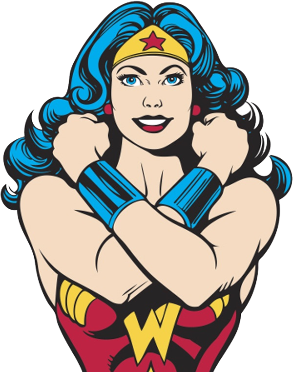

Wonder Woman is an Amazon warrior princess and one of the most powerful superheroes in the DC Universe.
When a pilot crashes and tells of conflict in the outside world, Diana, an Amazonion warroir in training, leaves home to fight a war, discovering her full powers and true destiny.
Diana, princess of the Amazons, trained to be an unconquerable warrior. Raised on a sheltered island paradise, when a pilot crashes on their shores and tells of a massive conflict raging in the outside world, Diana leaves her home, convinced she can stop the threat. Fighting alongside man in a war to end all wars, Diana will discover her full powers and her true destiny.
Wonder Woman finds herself battling two opponents, Maxwell Lord, a shrewd entrepreneur, and Barbara Minerva, a friend-turned-foe. Meanwhile, she also ends up crossing paths with her love interest.
In 1984, after saving the world in Wonder Woman (2017), the immortal Amazon warrior, Princess Diana of Themyscira, finds herself trying to stay under the radar, working as an archaeologist at the Smithsonian Museum. With the memory of the brave U.S. pilot, Captain Steve Trevor, etched on her mind, Diana Prince becomes embroiled in a sinister conspiracy of global proportions when a transparent, golden-yellow citrine gemstone catches the eye of the power-hungry entrepreneur, Maxwell Lord. Now, as a dear old friend from the past miraculously enters the picture, and Barbara Minerva, Diana's insecure gemologist colleague, gives in to desire, suddenly, deceit, greed, and false promises catapult Maxwell into the limelight. More and more, cataclysmic events push the world to the brink, and emotionally vulnerable Diana must address a cruel dilemma. Can mighty Wonder Woman save humankind once again?